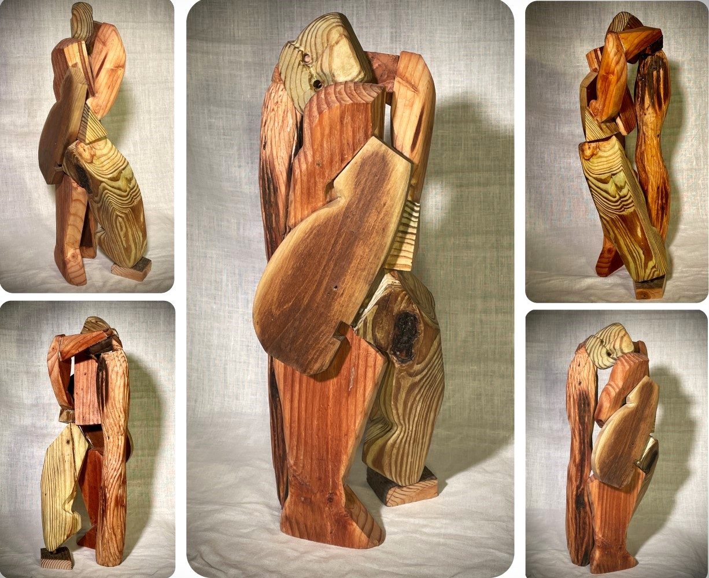
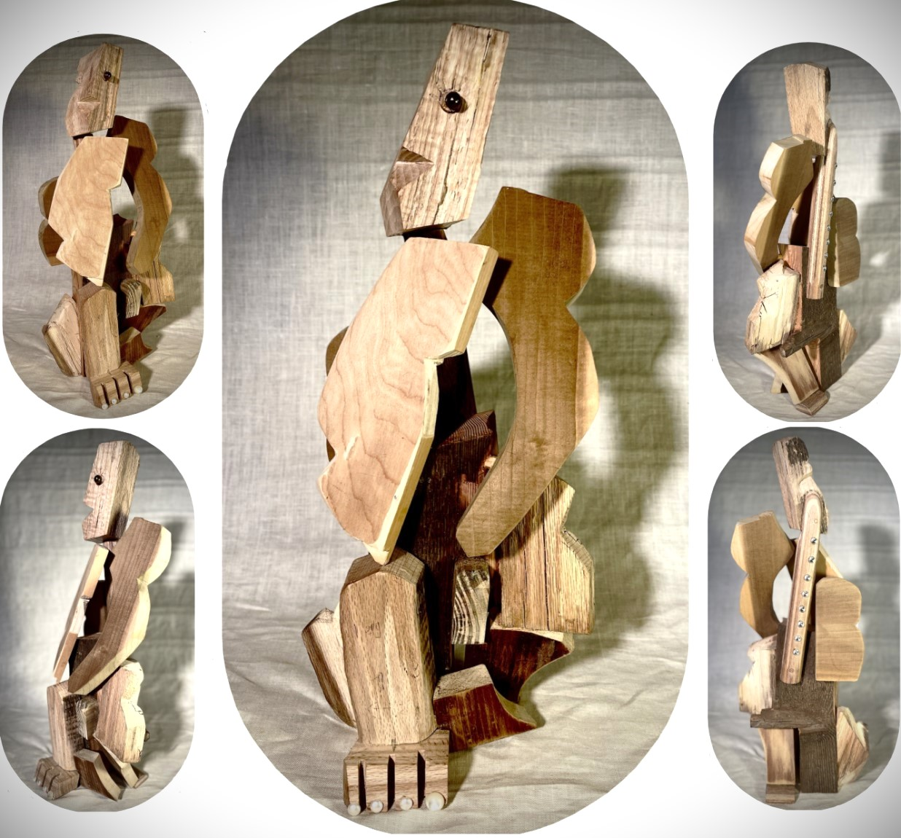

Reina de Fragmentos: Beauty in Brokenness
She is strength in pieces—fragmented, yet whole. Warm wood grains intertwine like memories, smooth & rough, just as love is. Costa Rican resilience whispers through each curve, a dance of survival. The sculpture’s fractured form mirrors life’s impermanence—.

yet in its reassembled grace, it speaks of legacy. Like quilts, woven with stories of generations, the artwork stitches sorrow and joy into something enduring.
Gina Chica Tica: Motion in the Unfinished
Angular limbs stretch, caught between joy and yearning. A mix of woods (oak, pine, & poplar) meets raw edges, forming voids & multiple angles- like laughter through tears. Central American & Afro-Caribbean rhythms pulse in her posture, a ritual of love refusing stillness.
Here, life and death converse: the raised leg mid-step, the torso leaning forward as if chasing time. The wood, once living, now carries her spirit—proof that endings are also beginnings.
Patchwork Man: The Mosaic of Memory
Oak, pine, poplar—scars and stories sewn together. Like Yoruba carvings, he stands layered: grief, hope, time. A testament: brokenness can be sacred geometry. Each patch honors the hands that shaped it, the cultures that birthed it, the love that lingers in the grain.

The Art of Love’s Legacy & Alchemy of Survival
These works are not just wood. They’re love letters in grain— Cubist echoes of a face, a laugh, a hand held tight. Illness fractures, but art reassembles. Cherished years of marriage live here: in the sanded curves, the jagged lines, the hollows where light slips through. To love is to sculpt time—knowing some edges will stay rough.

Richard Diaz
Art is a riddle in three parts: subject is the question, form the structure of thought, and content the elusive answer. To solve it, you must interrogate not just the visible, but the voids between—where meaning lingers, half-hidden, waiting to be found.